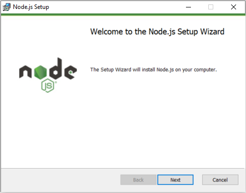
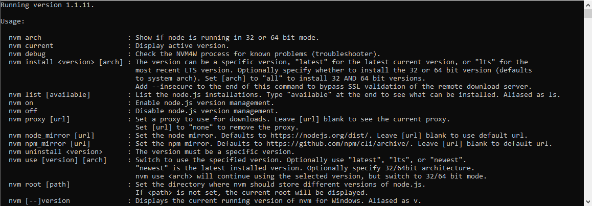
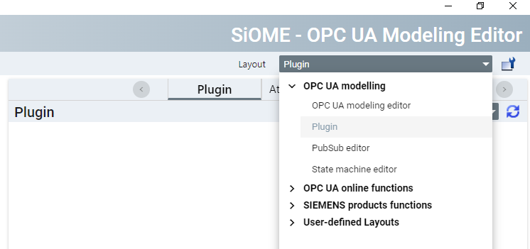
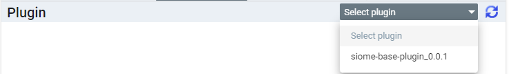
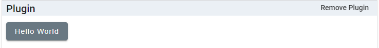
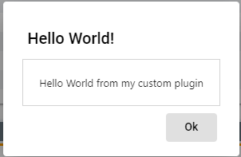

Preparation of the development environment
This section describes how to install all the software required to compile your SiOME plugin.
Installation of Node.js
Which version of Node.js you have to install is dependent on the Angular version (specified in dependencies of package.json) used in the plugin project. The dependency versions required by Angular are listed on their website: https://angular.dev/reference/versions.
Without version Manager

To install Node.js follow these steps:
- Open the Node.js download page: https://nodejs.org/en/about/previous-releases.
- Search for the version of Node.js required by your Angular version and select "Releases".
- Download the Windows Installer
node-<version>-x64.msi. - Install Node.js via the downloaded installer.
- To check if the installation succeeded, open a terminal and type the following command to check your installed Node.js version:
node --version
The output must match the version you have downloaded previously.
With version Manager

A version manager such as NVM for Windows (https://github.com/coreybutler/nvm-windows) can provide more flexibility when switching between projects with different versions of Angular.
-
Follow the installation guide on github: https://github.com/coreybutler/nvm-windows#installation--upgrades
-
To install a specific Node.js version, use
nvm install <version> -
To select the installed Node.js version, use
nvm use <version> -
To display the currently selected Node.js version, use
nvm current
Installation of Angular
To install the Angular, run the following command in the command line:
npm install -g @angular/cli
And allow the execution of Powershell Scripts with the command:
Set-ExecutionPolicy -Scope CurrentUser -ExecutionPolicy RemoteSigned
Carefully read the message displayed after executing the command and follow the instructions. Make sure you understand the implications of setting an execution policy.
Info
More Information about this topic is available under: https://angular.dev/tools/cli/setup-local
Set up SiOME for plugin use
- Open SiOME.
- Open " Settings > General" and under "Plugin directory" set the location of your plugin directory, where the folder containing your plugin files should be.
Building the siome-base-plugin
- Download and extract or fork and clone the siome-base-plugin repository.
- (optional) Open the now extracted project folder in Visual Studio Code.
- Open a terminal at the now extracted project location.
-
Install packages with the following command:
npm install -
(optional) In case you get the error message below, restart Visual Studio Code, this should fix the problem:
Cannot find type definition file for 'node'. The file is in the program because: Entry point of type library 'node' specified in compilerOptions
-
Build the plugin with the following command:
npm run build-plugin -
If the build was successful, you will find the created plugin folder under
siome-base-plugin/dist/releases. The plugin folder has the name of the plugin and contains one.cssand one.jsfile, which are the actual plugin files, as well as a license.txt. -
Copy the plugin folder to the "Plugins directory", you set earlier in SiOME.
Running the plugin in SiOME
Change "Layout" to "Plugin".

Click on "Select plugin".

Click on "siome-base-plugin".

To test the plugin, click on the button "Hello World".

Close the dialog, by clicking "Ok".
Close the plugin, by clicking "Remove plugin from SiOME".